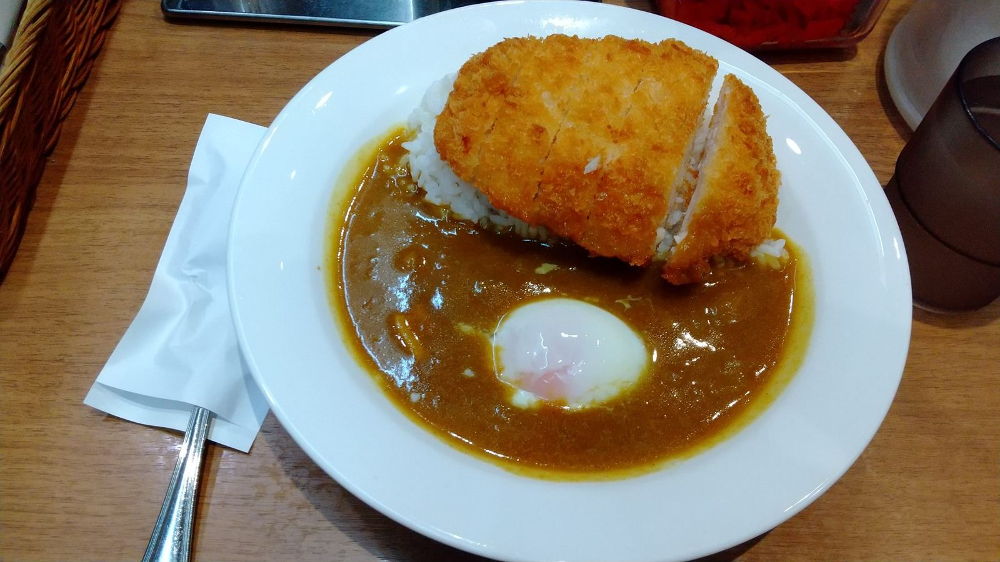
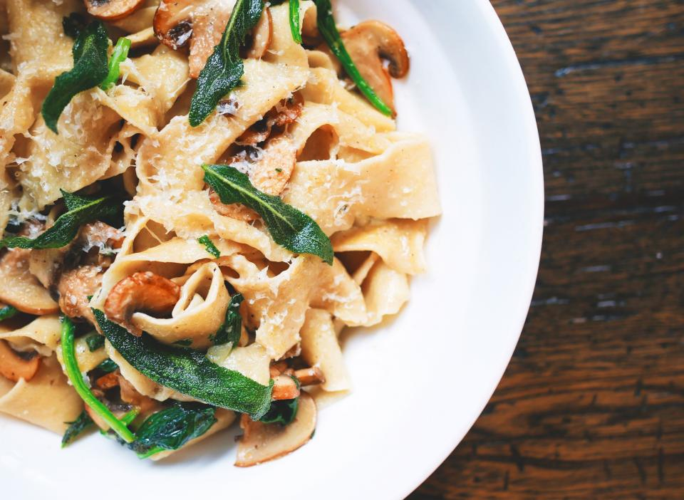

Yoshoku Marumi
なつかしくて、
あたたかい洋食を。
デミグラスソースは、三日かけて煮込みます。
ご挨拶
町の洋食屋さんです。
オープンして20年、家族でやっている小さな洋食店です。ハンバーグもオムライスも、ソースから手づくりしています。
お子さま連れも大歓迎。ご家族の記念日にも、ひとりのランチにも、気軽にお立ち寄りください。
おすすめ
店の定番

鉄板ハンバーグ
肉汁たっぷり、自家製デミグラス。
¥1,500
ふわとろオムライス
ケチャップライスを、とろとろ卵で。
¥1,300
カツカレー
サクサクのカツに、スパイス香るカレー。
¥1,400
GALLERY
店のようす


営業案内
ご来店をお待ちしています
- ランチ
- 11:30〜14:30(L.O. 14:00)
- ディナー
- 17:30〜21:00(L.O. 20:30)
- 定休日
- 月曜
- お子さま
- お子さまメニューあり